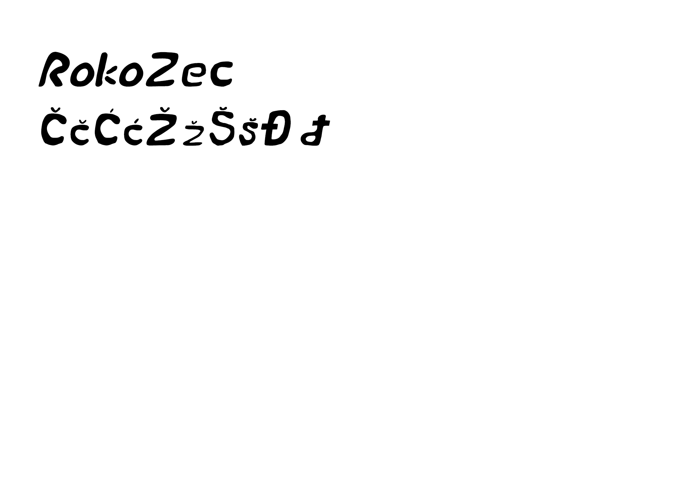
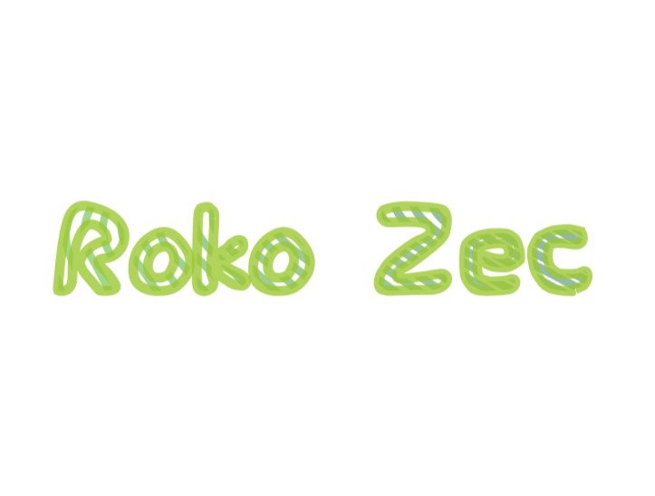
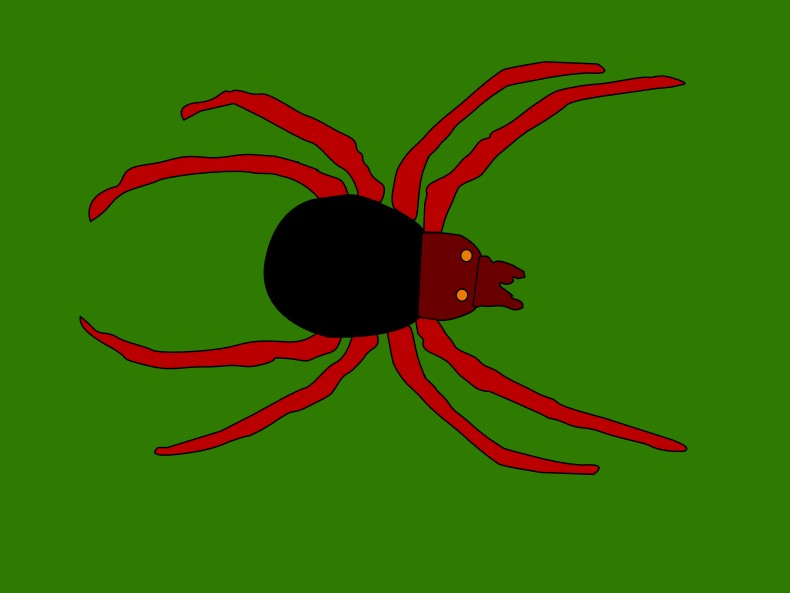
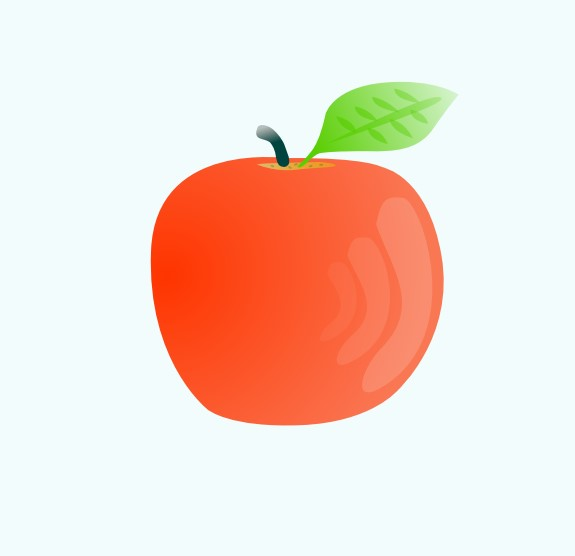
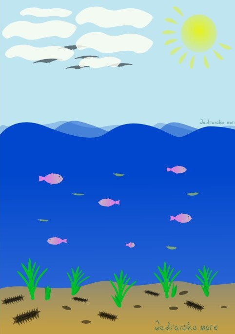
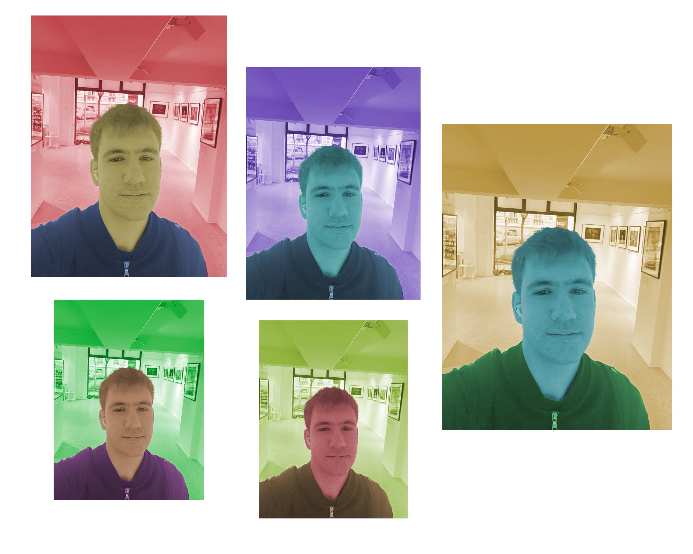

Vježbe
Tijekom ovog semestra imali smo mnoge vježbe iz ovog kolegija, a u nastavku pogledajte neke od mojih radova!
VJEŽBA 1
Zadatak vježbe 1 bio je osmisliti i napraviti vlastiti font.
VJEŽBA 2
Zadatak vježbe 2 bio je osmisliti i napraviti vlastiti font te unutar njega napraviti blend.
VJEŽBA 3
Zadatak vježbe 3 bio je koristiti pen tool kako bi po nekoj već postojanoj slici napravili svoju vektor sliku. Ja sam odabrao sliku svoje pauka. Koristio sam pen tool kako bih napravila razne oblike koje bih kasnije obojao u različite nijanse paint drop tool.
VJEŽBA 4
Zadatak 4 bio je korištenje gradienta. Uz već priložen video morali smo sami napraviti svoju verziju gradienta. Ja sam napravio svoje koktele koristeći pen tool, ali i linear/mesh gradient.
PROJEKTNI ZADATAK 1
Projektni zadatak 1 temeljio se na korištenju gradienta i pen toola. Sami smo trebali izraditi svoj font koji smo koristili u naslovu te napraviti svoje životinje i biljke podmorja koje smo morali kopirati nekoliko puta.
VJEŽBA 6
Zadatak vježbe 6 bio je rezanje i stvaranje novih layera slike kako bi ju kasnije koristili za bojanje u različite nijanse.
PROJEKTNI ZADATAK 2
Projektni zadatak 2 temeljio se na korištenju Adobe Photoshopa. Zadatak je bio čišćenje pozadine te rezanje i lijepljenje, a potom i i uređivanje slika koje smo sami odabrali.